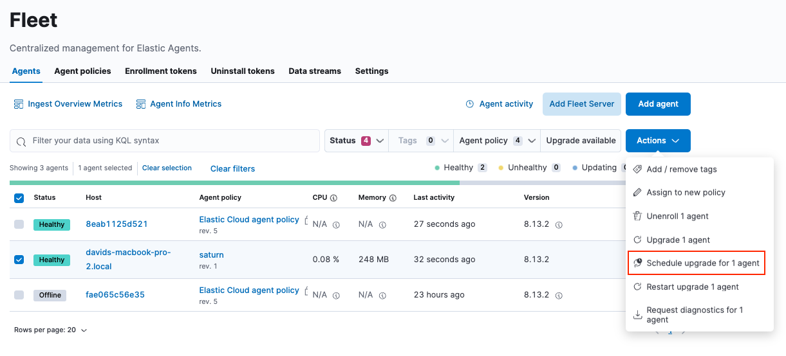
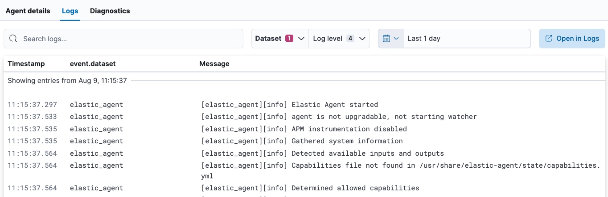

Upgrade Fleet-managed Elastic Agentsedit
Want to upgrade a standalone agent instead? See Upgrade standalone Elastic Agents.
With Fleet upgrade capabilities, you can view and select agents that are out of date, and trigger selected agents to download, install, and run the new version. You can trigger upgrades to happen immediately, or specify a maintenance window during which the upgrades will occur. If your Elastic Stack subscription level supports it, you can schedule upgrades to occur at a specific date and time.
In most failure cases the Elastic Agent may retry an upgrade after a short wait. The wait durations between retries are: 1m, 5m, 10m, 15m, 30m, and 1h. During this time, the Elastic Agent may show up as "retrying" in the Fleet UI. Note that you can abort an upgrade that is being retried. See Abort an upgrade.
This approach simplifies the process of keeping your agents up to date. It also saves you time because you don’t need third-party tools or processes to manage upgrades.
By default, Elastic Agents require internet access to perform binary upgrades from Fleet. However, you can host your own artifacts repository and configure Elastic Agents to download binaries from it. For more information, refer to Air-gapped environments.
The upgrade feature is not supported for upgrading DEB/RPM packages or Docker images.
To upgrade your Elastic Agents, go to Management > Fleet > Agents in Kibana. You can perform the following upgrade-related actions:
| User action | Result |
|---|---|
Upgrade a single agent to a specific version. |
|
Do a rolling upgrade of multiple agents over a specific time period. |
|
Schedule an upgrade of one or more agents to begin at a specific time. |
|
View the status of an upgrade, including upgrade metrics and agent logs. |
|
Stop an in-progress upgrade. |
Upgrade a single Elastic Agentedit
- On the Agents tab, click Upgrade available to see a list of agents that you can upgrade.
-
From the Actions menu next to the agent, choose Upgrade agent.

The Upgrade agent option is grayed out if an upgrade is unavailable or the Kibana version is lower than the agent version.
- In the Upgrade agent window, select an upgrade version and click Upgrade agent.
Do a rolling upgrade of multiple Elastic Agentsedit
You can do rolling upgrades to avoid exhausting network resources when updating a large number of Elastic Agents.
- On the Agents tab, select multiple agents, and click Actions.
-
From the Actions menu, choose to upgrade the agents.

- In the Upgrade agents window, select an upgrade version.
-
Select the amount of time available for the maintenance window. The upgrades are spread out uniformly across this maintenance window to avoid exhausting network resources.
To force selected agents to upgrade immediately when the upgrade is triggered, select Immediately. Avoid using this setting for batches of more than 10 agents.
- Upgrade the agents.
Schedule an upgradeedit
- On the Agents tab, select one or more agents, and click Actions.
-
From the Actions menu, choose to schedule an upgrade.
If the schedule option is grayed out, it may not be available at your subscription level. For more information, refer to Elastic Stack subscriptions.
- In the Upgrade window, select an upgrade version.
- Select a maintenance window. For more information, refer to Do a rolling upgrade of multiple Elastic Agents.
- Set the date and time when you want the upgrade to begin.
- Click Schedule.
View upgrade statusedit
-
On the Agents tab, when you trigger an upgrade, notice that the upgrade status appears in a banner at the top of the page. Agents that are upgrading have the status
Updatinguntil the upgrade is complete, then the status changes back toHealthy.
-
When upgrading many agents, you can fine tune the maintenance window by viewing stats and metrics about the upgrade:
- On the Agents tab, click the host name to view agent details. If you don’t see the host name, try refreshing the page.
- Click View agent dashboard to open the [Elastic Agent] metrics dashboard.
-
If the upgrade fails, view the agent logs to find the reason:
- From the Agent details tab in Fleet, click Logs.
-
Search for failures.

Abort an upgradeedit
If you need to stop an upgrade because it’s stalled or consuming too many resources, abort the upgrade:
- On the Agents tab, look for the banner that shows upgrade progress.
- Click Abort.